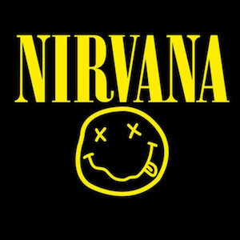
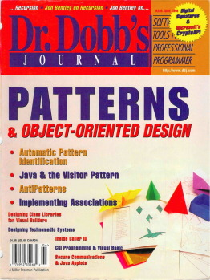
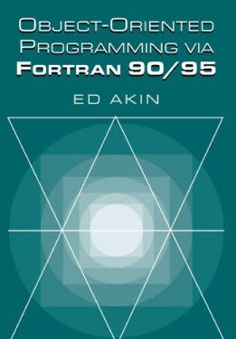
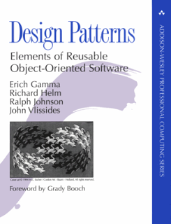
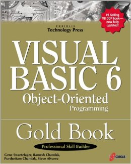
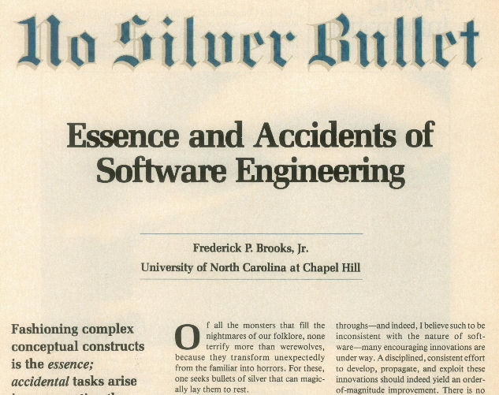
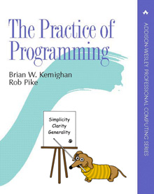
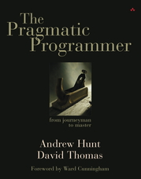
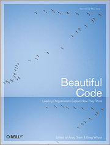

How To Write
Reusable Code
Greg Ward <greg@gerg.ca>
@gergdotca
PyCon 2015
Montreal, QC • Apr 11, 2015
Who remembers the 90s?

Oops, sorry, wrong 90s




Honestly, you didn't miss much
mostly clueless pontificators claiming
that object-oriented programming would
magically usher in an era of reusable component
software
...15 years pass...
Abstract
Singleton
Proxy
Factory
Bean
"Convenient proxy factory bean superclass for proxy factory beans
that create only singletons." *
* don't ask: it's a
Java thing
OOP was not a silver bullet

How to write reusable code?
- it's not free
- it's not magic
- requires some forethought
- requires much attention to detail
If I can do it, you can do it
- I've been programming for 30 years
- some bad code
- some good code
- a lot of so-so code
- learn from my fail!
Caveat: is reusability important?
- not always!
- nothing wrong with code that does one thing for one application
- don't fall into the trap of thinking that everything
must be a potential library
Principles of Reusable Code
- be a better programmer
- fewer classes, more functions
- functions ≠ procedures (aka, beware side effects)
- fewer frameworks, more libraries
- don't go overboard
- don't solve everything
- test, test, test
- document, document, document
- extensibility ≠ reusability
1. Be a better programmer
- read more code
- write more code and make it better
- read more books
- do not learn to program from Google



2. Fewer classes, more functions
- not an anti-OOP rant: I write lots of classes
(probably too many!)
- but don't write a class when a function will do
- a collection of related functions with shared state: that's a
class! make it one!
Anti-pattern #1
Code smells:
- a class with a single public method
- especially a class with only a single method, period
class ThingLoader:
def __init__(self, host, id):
self.host = host
self.id = id
def load(self):
# connect to self.host
# load thing identified by self.id
A better way
def load_thing(host, id):
# connect to host
# load thing identified by id
Tip o' the hat to Jack Diederich:
- https://www.google.com/search?q=stop+writing+classes+pycon
- https://www.youtube.com/watch?v=o9pEzgHorH0
Anti-pattern #2
def is_draft(conn, article_id):
'''return true if the specified article is unpublished'''
def is_published(conn, article_id):
'''return true if the specified article is published'''
def load_article(conn, article_id):
'''load article from database over conn, returning body'''
def save_article(conn, article_id, body):
'''write article to database over conn'''
A better way
class ArticleStore(object)
def __init__(self, conn):
self.conn = conn
def is_draft(self, article_id):
'''return true if the specified article is unpublished'''
def is_published(self, article_id):
'''return true if the specified article is published'''
def load_article(self, article_id):
'''load article from database, returning body'''
def save_article(self, article_id, body):
'''write article to database'''
3. Functions ≠ procedures
- Pascal's best idea: functions compute stuff, procedures do stuff
- mainstream imperative languages (C, Java, Python, ...) don't care
- you should care
- rule of thumb: every function should either return a
value or have a side effect: never both!
- or, learn Haskell!
Anti-pattern #3
/**
* Replace all 'e' characters in str with 'E'. Return the number of
* characters replaced.
*/
int strmunge(string str) {
...
}
- C programmers are notorious for this sort of thing
- but then, you only program in C if you are obsessed with
performance
- and performance is one reason to violate this rule
It's not just C programmers
def get_foo(self, foo=None):
'''Query the server for foo values.
Return a dict mapping hostname to foo value.
foo must be a dict or None; if supplied, the
foo values will additionally be stored there
by hostname, and foo will be returned instead
of a new dict.
'''
(spotted in a real-life code review, Apr 2015)
A better way
/**
* Return newstr, a copy of str with all 'e' characters replaced
* by 'E', and nreplaced, the number of characters replaced.
*/
(string, int) strmunge (string str) {
...
}
(assume a language with multiple return values)
def get_foo(self):
'''Query the server for foo values.
Return a dict mapping hostname to foo value.
'''
4. Fewer frameworks, more libraries
- library: code that you call (you are in control)
- framework: code that calls you (framework is in control)
- you can't pick and choose which bits of a framework you want
- it's typically all-or-nothing
- this hampers reuse!
5. Don't go overboard
- OOP is a useful trick to have in the toolbox
- thus, classes are not evil
- a computer is just a big box of numbers (with some wires going
in and some wires going out)
- side effects are unavoidable: they are not evil
- certain problem domains call out for constraint
- frameworks are not evil
6. Don't solve everything
- avoid the temptation to handle every case: you will
miss something
- who can supply the functionality you left out? programmers,
the very people who use your library
- who can remove that bit of ill-advised code you put in that's
ruining my day? NOBODY
7. Test, test, test
- automated tests are necessary but not sufficient
- untested code is useless
- tested code might be useful
- no controversy here: you must write tests
8. Document, document, document
- documentation is necessary but not sufficient
- undocumented code is useless
- documented code might be useful
- inline reference docs (docstrings, javadoc, etc.) is the bare
minimum
9. Extensibility ≠ reusability
- another part of the early 90s snake-oil promise: extensible,
reusable software components
- just because you type "class Foo" does not make your code
reusable or extensible
- these are largely independent properties of software
- if you know how to write extensible code, give a talk!
Conclusion
- there ain't no such thing as a free lunch
- good stuff requires effort
- that includes reusable and/or extensible code
- beware of pompous windbags, clueless pontificators, and other
purveyors of snake oil
←
→
/
#